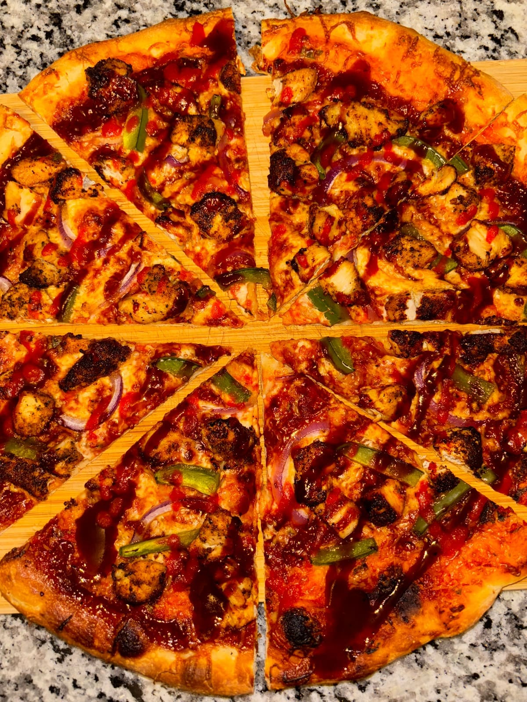

The dough is the whole game
A New York slice is mostly bread, and good bread is mostly time. The dough gets mixed once, kneaded briefly, and then does nothing visible for two or three days in the fridge. That's the cold ferment: at fridge temperature the yeast slows to a crawl, and the flavor compounds it produces get days to accumulate instead of hours. Same four ingredients, completely different pizza.
A same-day dough tastes like flour. A 48-to-72-hour dough tastes like something: slightly tangy, faintly sweet, with a chew that doesn't fight back. The slow ferment also builds the blistering: all those tiny bubbles that char into leopard spots on a hot steel.
| Flour (high-protein bread flour) | 100% |
|---|---|
| Water | 62% |
| Salt | 2.5% |
| Instant dry yeast | 0.4% |
| Oil (the NY-style tell) | 2% |
| Sugar | 1% |
| Cold ferment | 48–72 hrs @ 3°C |
Nothing in the recipe is exotic. The only rare ingredient is the willingness to start on Thursday for a Sunday pizza.
The starter (not ready yet)
In development
The next step past commercial yeast is culturing my own: a sourdough starter, which is just flour and water that you feed on a schedule until wild yeast and bacteria move in and make it reliable. It's the slowest project on this site. You don't build a starter, you keep showing up until it exists.
The goal isn't sour pizza. A small percentage of starter in a long cold ferment adds depth that dry yeast can't, without turning a NY slice into San Francisco bread. When it can double itself on schedule, it earns a place in the dough spec above.
The steel
Home ovens top out around 550°F; pizza ovens run 900°F. The workaround is a slab of quarter-inch steel. Steel conducts heat far faster than stone. When the dough lands, the steel dumps energy into it immediately instead of politely warming it up. That first shock is what sets the rim (the oven spring) and chars the underside before the toppings overcook.
| Steel position | Top third of the oven |
|---|---|
| Preheat | 60 min @ max (550°F) |
| Boost | Broiler on before launch |
| Bake | 6–8 min · turn once at 4 |
| Target underside | Leopard-spotted, not uniform |
The broiler trick matters: running it during the preheat pushes the steel's surface past what the thermostat admits, and the radiant heat from above stands in for a pizza oven's dome. It's the closest a rental kitchen gets to Brooklyn.
The signature, in progress
R&D · Not yet on the menu
Every pizza maker eventually needs one pie that's theirs. Mine is being developed now: mortadella, pistachio pesto, and honey. A white base (no tomato to shout over everything) with the mortadella laid on after the bake so it warms instead of crisps, pistachio pesto for fat and salt, and a thin drizzle of honey to pull the whole thing toward that sweet-savory edge.
It's a known flavor triangle (Bologna figured out mortadella and pistachio centuries ago); the R&D is in the ratios. Too much honey and it's dessert. Too much pesto and the crust goes soggy. When the spec stabilizes, it gets a name and a permanent entry here.

From the cookbook BBQ Chicken Pizza, where this started One of twenty recipes in Adam's Cookbook, the TikTok recipe archive.